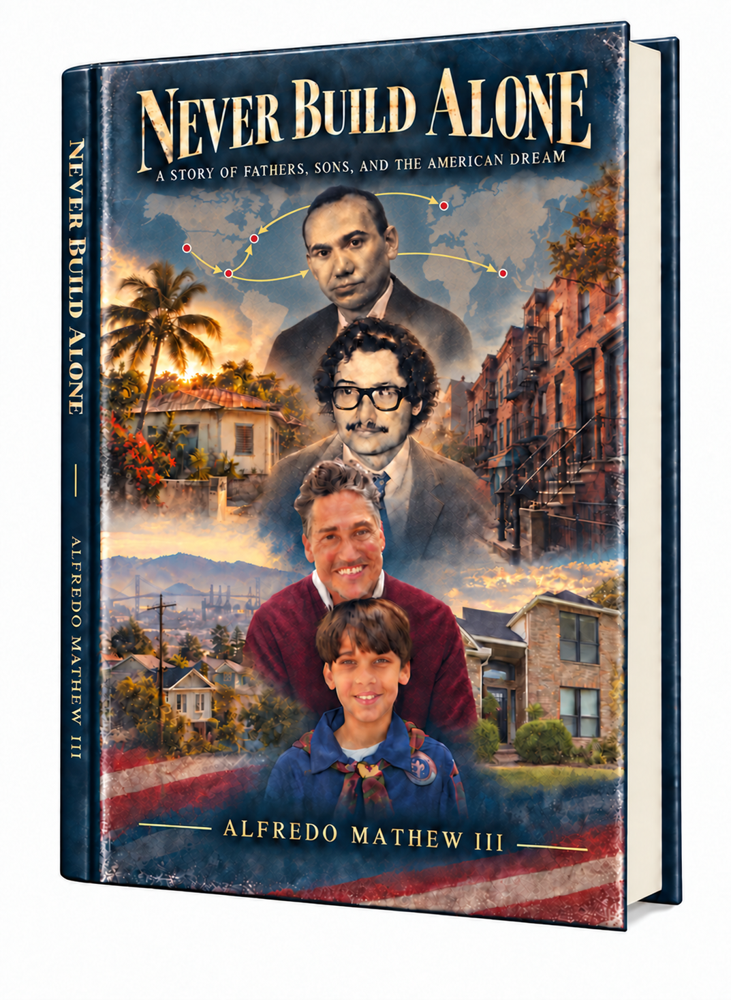

What we inherit
Fathers, sons, migration, and public education.
A Story of Fathers, Sons, and the American Dream
A memoir of inheritance, institutions, and the cost of believing that one person can carry a public purpose by himself.

“We are surrounded by stories of individual brilliance. We need more honest stories about interdependence.”
He was an educator, principal, superintendent, public advocate, and writer. I knew his public force. I did not have the time to know the man inside it.
His inheritance is larger than the distance between a father and son: migration, public education, community power, and the belief that institutions could widen opportunity. Never Build Alone asks what we lost—and what it would take to recover it.
The idea in public
America is the richest country in the world, but we are not well. When communities create value without ownership, capital, or governance, prosperity becomes extraction. This book asks what it would take to make shared prosperity real.

Why now
Something is wrong beneath American life: we have resources, intelligence, and people who care, but our institutions no longer connect them. We keep translating structural problems into private instructions—work harder, adapt faster, become more resilient.
Never Build Alone is an invitation to rebuild the connective tissue of a common life.
Never Build Alone is an intergenerational civic memoir about what one generation inherits, what the next tries to build, what breaks, and what remains unfinished.
Fathers, sons, migration, and public education.
Teaching, entrepreneurship, and public purpose.
Capital, community, ownership, and trust.
Family, governance, conflict, and America.
Recovery, responsibility, and shared prosperity.
The work ahead
The book asks how we leave the next generation with more than we received—not only more money, but more agency, trust, knowledge, and shared capacity.
Read the full treatment ↗